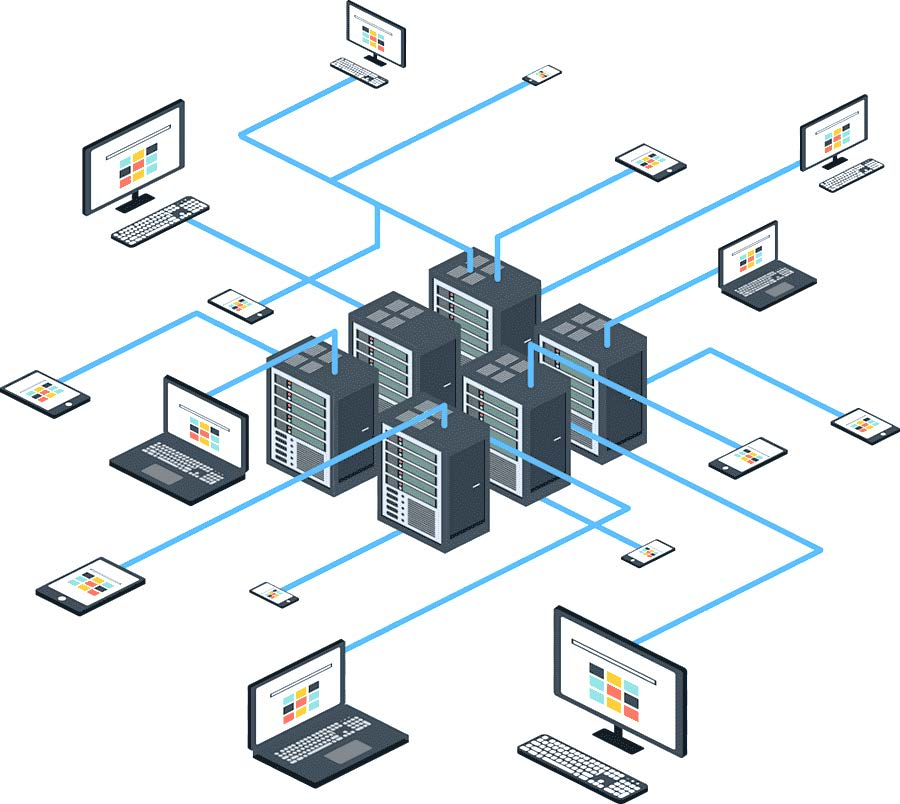
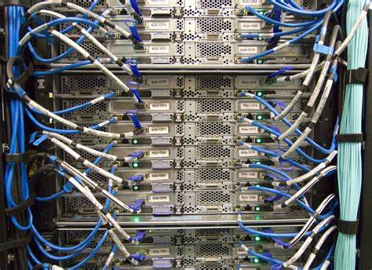
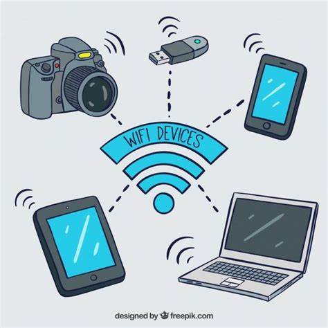
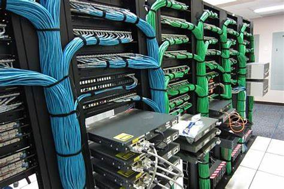
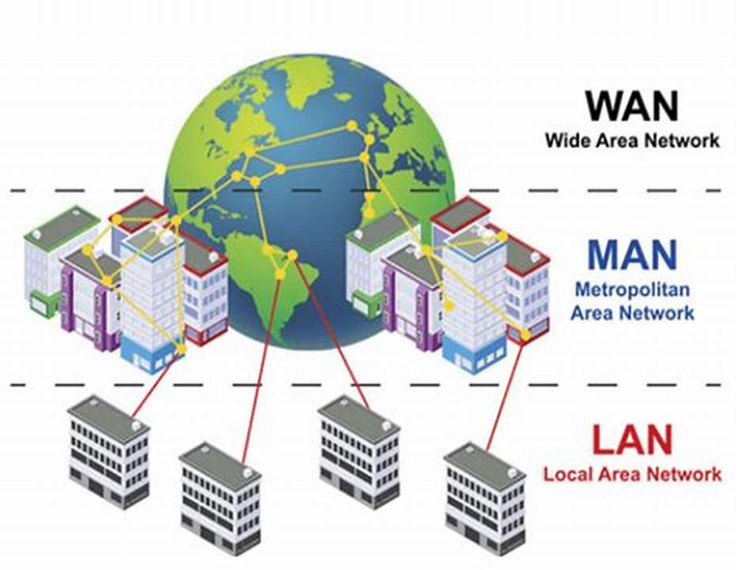
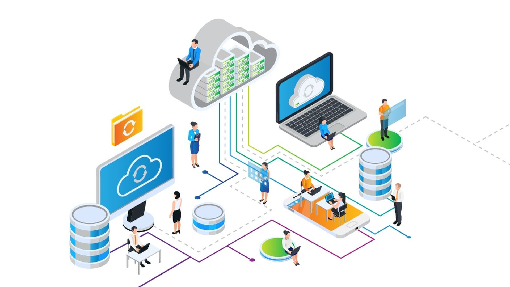
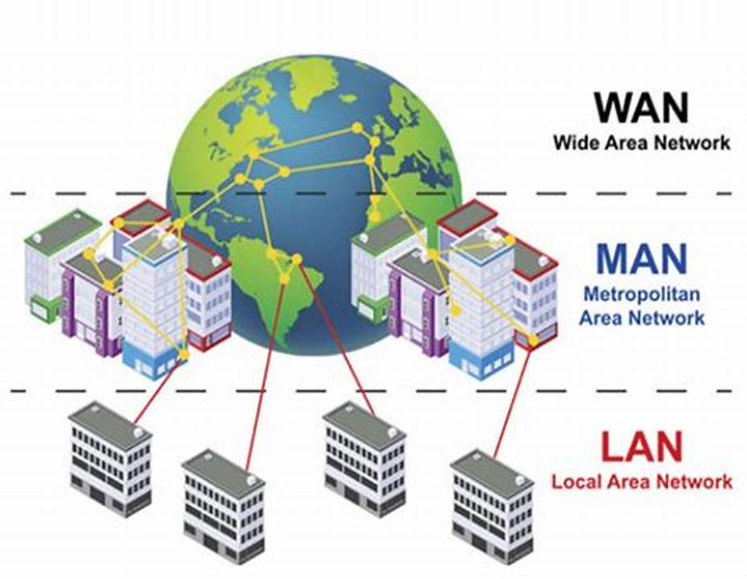
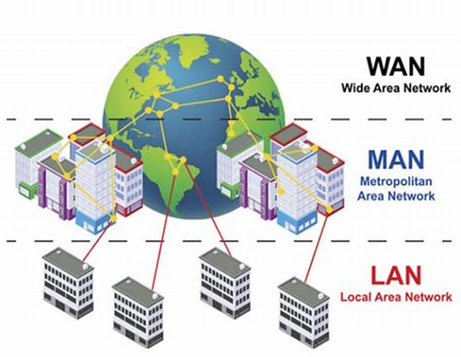

Impulsamos industrias, nuestra misión es tu éxito.
INICIO
INSTALACIÓN DE CAMARAS
DESARROLLO DE SOFTWARE
MANTENIMIENTO Y SOPORTE DE REDES
INTERNET DE LAS COSAS
MANTENIMIENTO PREVENTIVO Y CORRECTIVO DE COMPUTO
COMPRA Y VENTA DE COMPUTADORES
Mantenimiento y soporte de redes
Mantén tu red siempre activa y eficiente con nuestro servicio especializado de mantenimiento y soporte.
Atendemos las necesidades de tu infraestructura tecnológica con soluciones rápidas y seguras, asegurando
un rendimiento óptimo y minimizando el tiempo de inactividad. Nuestro equipo de expertos está preparado para
resolver problemas técnicos, optimizar tu red y garantizar la conectividad que tu negocio necesita.
¡Confía en nosotros para mantener tu conexión siempre en las mejores condiciones!
Nos especializamos en el mantenimiento y soporte de redes, ofreciendo soluciones confiables y de alta calidad
para optimizar la infraestructura tecnológica de su empresa. Ya sea para pequeñas o grandes empresas, nuestro servicio
asegura el correcto funcionamiento y la eficiencia de sus redes de datos, minimizando tiempos de inactividad y mejorando
la conectividad.
Brindamos soporte integral para equipos, servidores y redes, utilizando las herramientas más avanzadas y
adaptadas a las necesidades específicas de cada cliente. Nuestro objetivo es asegurar una red robusta,
segura y eficiente, proporcionando tranquilidad a nuestros clientes y permitiéndoles enfocarse en el crecimiento
de su negocio sin preocupaciones tecnológicas.
Con nuestro servicio, tendrás acceso a mantenimiento preventivo, soporte técnico especializado y resolución de
problemas de redes, garantizando la estabilidad y el rendimiento óptimo de su infraestructura tecnológica en
todo momento.




Realizaremos un análisis exhaustivo de las necesidades de tu red y te proporcionaremos un estudio detallado, recomendando
las soluciones de mantenimiento y soporte más adecuadas para tu empresa o negocio. No pongas en riesgo la operatividad de tu empresa,
asegúrate de tener redes estables y confiables que garanticen el funcionamiento óptimo de todas tus actividades.
En nuestro servicio de mantenimiento, te ofrecemos una variedad de opciones adaptadas a tus requerimientos,
desde el soporte técnico preventivo para evitar fallos hasta soluciones personalizadas para cada tipo de infraestructura.
Además, brindamos asistencia para la optimización de tus equipos de red, asegurando un rendimiento eficiente y continuo. Nuestro enfoque flexible y detallado garantiza que todas tus necesidades tecnológicas estén cubiertas con la máxima profesionalidad.

Para obtener una solución a la medida de sus necesidades, te invitamos a contactar con nuestro equipo de expertos.
Mantenimiento y Soporte de Redes
-Análisis y diagnóstico de la infraestructura de red.
-Mantenimiento preventivo y correctivo de redes.
-Configuración y optimización de equipos de red como routers y switches.
-Soporte técnico para redes inalámbricas (Wi-Fi) y cableadas.
-Monitoreo remoto de redes y servidores.
-Solución de problemas de conectividad y fallos en el sistema de red.
-Implementación de sistemas de seguridad en la red (firewalls, VPNs, etc.).
-Asesoría en la mejora de la capacidad y rendimiento de la red.
-Soporte técnico 24/7 para empresas y PYMES.
Optimización y Gestión de Redes

-Planificación y diseño de redes de alta disponibilidad.
-Configuración avanzada de redes para mejorar el rendimiento.
-Auditorías de seguridad para proteger redes y datos sensibles.
-Implementación de protocolos de calidad de servicio (QoS).
-Gestión de ancho de banda y optimización de tráfico.
-Soporte para redes corporativas y de pequeñas empresas.
-Implementación de soluciones de redundancia y respaldo de red.
-Consultoría en proyectos de expansión de redes.
Consultoría en Infraestructura de Redes
-Asesoría en la selección de equipos para redes empresariales.
-Diseño de arquitectura de redes adaptadas a las necesidades de su empresa.
-Evaluación y mejora de la infraestructura tecnológica de redes existentes.
-Recomendaciones para la implementación de nuevas tecnologías de red.
-Análisis de riesgos y planificación de contingencia para redes.
-Soporte en la migración de redes y servidores a nuevos entornos.
-Auditoría de cumplimiento normativo en seguridad de redes.
-Monitoreo continuo de redes para detectar posibles amenazas.
Rediseño de Redes y Actualización de Infraestructura
-Evaluación y rediseño de redes existentes para adaptarlas a nuevas necesidades.
-Reemplazo de equipos obsoletos por tecnología de última generación.
-Mejora de la conectividad y velocidad en redes con alto tráfico.
-Implementación de soluciones de red escalables y adaptadas al crecimiento de la empresa.
-Actualización de infraestructura de red para garantizar la compatibilidad con nuevos dispositivos y protocolos.
-Planificación y ejecución de actualizaciones de redes sin interrumpir el servicio.
-Mantenimiento de redes para asegurar su funcionamiento eficiente y sin fallos.
-Soporte para redes de alta capacidad y empresas con múltiples sedes.

 
